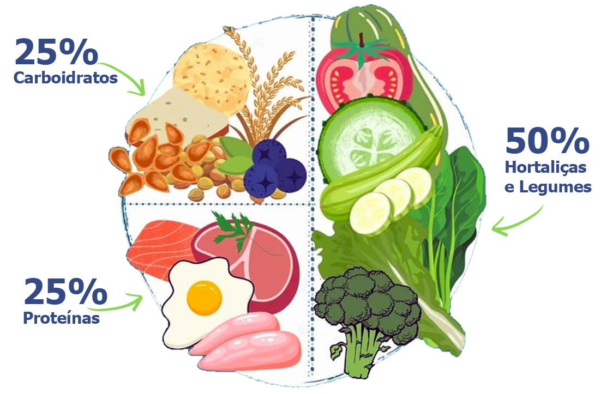

← voltar pra cozinha 🛒Estes alimentos são ricos em fibras, vitaminas e minerais que fortalecem sua imunidade...
💡 Dicas para aproveitar melhor:- Varie as cores para garantir nutrientes diversos
- Prefira sempre alimentos da estação
- Experimente diferentes preparos
- Inclua folhas verde-escuras
- Frutas frescas ou secas são ideais para lanches
Alimentos como arroz, massas, pães, batata, mandioca e milho são responsáveis por fornecer toda a energia que seu corpo precisa para funcionar perfeitamente.
💡 Escolhas inteligentes para mais energia:- Prefira versões integrais sempre que possível — mais fibras e nutrientes
- Varie entre diferentes fontes: quinoa, batata doce, aveia, tapioca
- Use uma xícara como medida para controlar as porções
- Combine com legumes para potencializar os benefícios
- Granola e pães integrais são ótimos no café da manhã
De origem animal ou vegetal, as proteínas são fundamentais para músculos, ossos, unhas, hormônios e enzimas — verdadeiros arquitetos da sua saúde.
💡 Variedade que constrói saúde:- Animais: carnes magras, peixes, ovos, leite, iogurte, queijos
- Vegetais: feijão, lentilha, soja, grão-de-bico, cogumelos
- Alterne as fontes durante a semana para completar nutrientes
- Experimente preparos diferentes: grelhado, assado, cozido, mexido
- Omeletes são perfeitas para jantares mais leves
Cada cor representa nutrientes específicos! Quanto mais colorido seu prato, mais completa sua nutrição. Alguns nutrientes são corantes naturais — por isso a cor indica o que há de especial naquele alimento.
💚 Verde
Rico em: Vitaminas A, C, E, ferro, cálcio, fósforo, fibras
Poderes: Intestino saudável, combate envelhecimento, diminui cansaço mental, acelera metabolismo
Encontre em: Folhas escuras, brócolis, pimentão, kiwi, abacate
💛 Amarelo/Laranja
Rico em: Vitaminas A e C, betacaroteno
Poderes: Fortalece imunidade, protege visão, previne catarata, mantém bronzeado natural
Encontre em: Cenoura, pimentão amarelo, laranja, tangerina, manga, abóbora, pêssego
❤️ Vermelho
Rico em: Licopeno, vitaminas A, C, complexo B, ácido fólico, potássio, cálcio
Poderes: Melhora memória, protege coração, combate radicais livres, previne câncer de próstata
Encontre em: Tomate, morango, melancia, goiaba, maçã, pimentão vermelho
💜 Roxo
Rico em: Resveratrol, antocianinas, ácido elágico, betacaroteno
Poderes: Controla glicemia, anti-inflamatório, antioxidante, evita envelhecimento precoce
Encontre em: Repolho roxo, berinjela, beterraba, uva, jabuticaba, cebola roxa, ameixa
Adapte conforme sua rotina e orçamento, sempre buscando o equilíbrio de nutrientes e diferentes grupos alimentares.
☕ Café da Manhã
🍓 Frutas e Vitaminas: Frutas frescas ou secas, geléia sem açúcar, frutas com mel e aveia
🍞 Energia: Pão ou torrada integral, tapioca, granola
🥛 Proteínas: Leite, iogurte, queijos diversos, ovos mexidos
🍛 Almoço
🥦 Base Nutritiva: Mix de folhas, saladas diversas, legumes quentes assados, grelhados ou refogados
🍚 Combustível: Arroz, massas variadas, purê de batata, mandioca cozida
🥩 Construção: Carnes diversas, omeletes, soja, feijão, lentilha
🥗 Jantar
Opção Leve: Omeletes com legumes, sopas com ingredientes dos diferentes grupos
Opção Completa: Similar ao almoço, dando destaque às saladas e frutas
💤 Dica do Chef: Refeições mais leves facilitam uma boa noite de sono
Quando a fome bater entre as refeições principais:
- Frutas frescas ou salada de frutas
- Chips de legumes assados
- Iogurtes naturais
- Mix de castanhas e nozes
- Chocolate com moderação — prefira maior concentração de cacau ou sem açúcar
- Planejamento é essencial: Monte um cardápio semanal e faça lista de compras
- Flexibilidade na prática: Adapte as receitas ao seu bolso e rotina
- Moderação, não privação: Um docinho ocasional não estraga tudo
- Cozinha caseira: Sempre que possível, prepare em casa com carinho
- Paciência com mudanças: Comece devagar e seja gentil consigo mesmo
- Diversificação: Invista na variedade de ingredientes, não apenas em cortes
- Alimentos in natura: Prefira sempre aos ultraprocessados
Uma alimentação saudável é muito mais sobre diversificar ingredientes do que apenas deixar de comer algo.
Cada pequena mudança conta e sua saúde agradece cada escolha consciente! 🌟